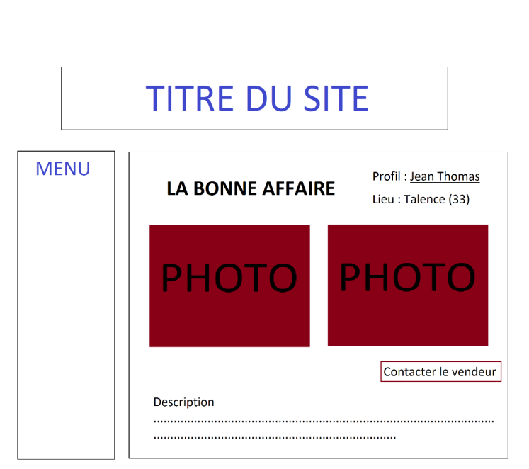
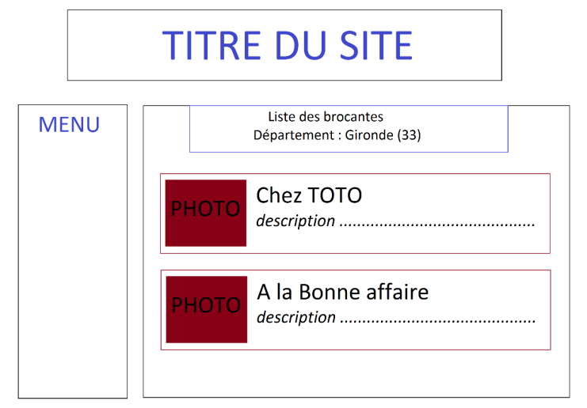

Decouvrer ici ce sur quoi nous travaillons en ce moments
Projet en cours
Introduction:
Ce projet de programmation web a pour but de vous faire
développer une application web utilisant l’architecture dynamique côté serveur.
Il serat notés sur toutes les composantes de l’application :
● Qualité du code HTML/CSS et JavaScript
● Qualité de l’apparence visuelle, simplicité d’utilisation
● Qualité du code PHP/SQL, qualité de la structure de la base de données
● Facilité de déploiement
Voici la liste des technologies qui doivent être utilisées dans le projet :
● HTML5
● CSS 3
● JavaScript
● MySQL (objet de recherche et d'autoformation, car non fait en classe pour le moment)
● PHP 5, fonctions uniquement, pas de mécanismes objets (objet de recherche et d'autoformation, car non fait en class)
Déroulement:
Le groupes sera constitués une fois pour toutes au début de la première séance. La presence de tous les menbre sera obligatoire a chaque séance, sauf en cas d'empechement. Le reste de la
séance sera consacré à la clarification du sujet et au début de l’implémentation. Une deuxième séance .sera ensuite effectuée pour vérifier que tout le monde a bien compris le sujet et pour répondre aux questions techniques qui auront été soulevées par une première confrontation au sujet.
Le site sera accesible en ligne et chaque membre poura idividuellement modifier le code selon la tache qui lui a été confiée.
Notre page facebook(Dynaty student) informerat sur l'évolution du project, et servira d'outil question reponse pour le moment avant la creation de notre blog.
Sujet:
Vous devez développer une application/site de brocante en ligne. Le principe de cette
application est le suivant : il s’agit de pouvoir mettre en ligne les photos en vrac de son stand ainsi que
quelques descriptions. Contrairement aux sites type « leboncoin », ici les photos sont des photos globales
des stands, comme dans les vraies brocantes. Plus simple pour les utilisateurs (vendeurs) que de décrire
chaque objet et de fixer un prix. Aux autres utilisateurs (acheteurs) ensuite de fouiller les photos des
brocantes à proximité, à la recherche de l’objet rare, et de contacter le vendeur si un objet les intéresse.
Pour créer leurs brocantes et uploader des photos, les utilisateurs doivent d’abord s’inscrire ;
ensuite ils peuvent se connecter sur l’application ; après connexion, ils peuvent éditer leur profil, ajouter
des photos, descriptions, etc. En revanche, il n’est pas nécessaire de s’inscrire pour visualiser les
brocantes en ligne.
Fonctionnalités:
Écran d’accueil/connexion :
L’écran d’accueil est un simple écran présentant le site. Son fonctionnement, ses règles, les liens
vers les différents menus, etc, soyez inventifs. Celui-ci peut suggérer à l’utilisateur de se connecter. Pour
cela, ce dernier doit fournir un mail ainsi qu’un mot de passe. L’écran de connexion doit fournir un lien
vers l’écran d’inscription. Si l’utilisateur arrive à se connecter, il doit être redirigé vers son l’écran de
son profil. Sinon, un message d’erreur doit expliquer pourquoi la tentative de connexion a échouée.
Écran d’inscription :
L’écran d’inscription permet à un utilisateur de s’inscrire. Pour cela il doit fournir un mail, un
mot de passe qui doit être saisi deux fois pour éviter les erreurs. Il doit aussi fournir un nom, un prénom,
un pseudo, un département, et une ville. Une fois l’utilisateur inscrit, il doit être redirigé vers l’écran de
connexion. Attention, il ne peut y avoir qu’un seul utilisateur ayant une adresse mail donnée. Les
vérifications sur les champs du formulaire doivent être effectuées côté client et côté serveur.
L’utilisation d’un script Javascript est possible et recommandée (mais facultative car non vu en
cours) pour vérifier avant l’envoi, l’état du formulaire. Les vérifications à effectuer peuvent être les
suivantes : le mot de passe fait au moins 6 caractères, les noms font plus de deux caractères, le
département est valide, le mail est dans un format correct (login@domaine.extension), et toutes les
données demandées ont été saisies. Si les données saisies par l’utilisateur ne sont pas correctes, elles
peuvent être affichées sur fond rouge. Dans ce cas des messages, également en rouge, peuvent expliquer
pourquoi les données ne sont pas correctes.
Écran de profil :
Cet écran permet de visualiser le profil d’un utilisateur. Description, lieu de résidence, liens vers
ses différentes brocantes, ou encore photo (optionnel). Bien sûr la modification des données ne doit être
rendue possible que pour l’utilisateur lui-même.
Écran des brocantes :
Un utilisateur peut créer jusqu’à 3 brocantes, thématiques ou non. Dans chacune d’elle il peut
uploader jusqu’à 2 photos de 2Mo max. Lorsque l’on clique sur une brocante, on voit donc le détail des
photos, et une description associée. Un lien vers le profil du vendeur est bien sûr disponible, ainsi qu’un
lien « contacter le vendeur ».

Écran de mail :
Comme pour « leboncoin », vous pouvez envoyer un mail au vendeur concernant une brocante
(demande de prix d’un objet, photos supplémentaires, etc.). L’adresse mail du vendeur ne doit pas être
visible et le nom de la brocante doit être passée en argument et pré-remplie dans l’objet du mail.
Écran de recherche :
Ici vous pouvez avoir un aperçu des différentes brocantes en ligne. Une présentation synthétique
doit donc être faite, type première photo, début de la description, etc. Parmi les options de recherche,
l’utilisateur doit pouvoir sélectionner une région ou un département. Cette information est sélectionnée
depuis le champ département renseigné lors de l’inscription de l’utilisateur qui a mis en ligne sa
brocante.
Exemple : J’habite en Gironde, je crée 1 brocante, que je nomme « chez TOTO ». Un autre utilisateur
dans le département a créé une brocante « A la bonne affaire » dans laquelle il stocke un tas d’antiquités
en tout genre. Si je souhaite créer une seconde brocante, je vais sur mon profil et je crée une nouvelle
brocante. Celle-ci apparaitra alors dans les derniers résultats de recherche ainsi qu’en Gironde et en
Aquitaine.

Fonctionnalités bonus :
A vous d’être imaginatifs, inspirez-vous des autres sites. Chaque fonctionnalité en plus sera
prise en compte et appréciée selon sa difficulté.
Liste non exhaustive :
- Tri des brocantes selon la date d’ajout, le nombre de photos.
- Tri selon plusieurs paramètres.
- Enregistrer des brocantes en favoris.
- Choix pour l’utilisateur de la photo à mettre en avant.
- Liens utiles (tarifs de la poste, etc.).
- Utilisation de JavaScript pour la vérification des données, champs, etc.
Conseils :
La programmation Web demandée est assez vaste mais relativement facile, il s’agit donc
beaucoup de s’autoformer. Le travail demandé n’est pas difficile, il suffit d’aller chercher l’information,
de trouver des exemples. La question que vous vous posez a forcément déjà été posée en ligne, alors
utilisez Google !
comme nous developpons sur des machines locales , nous utiliserons XAMPP qui permet
d’installer un serveur web avec PHP en local avec tout ce qu’il faut !